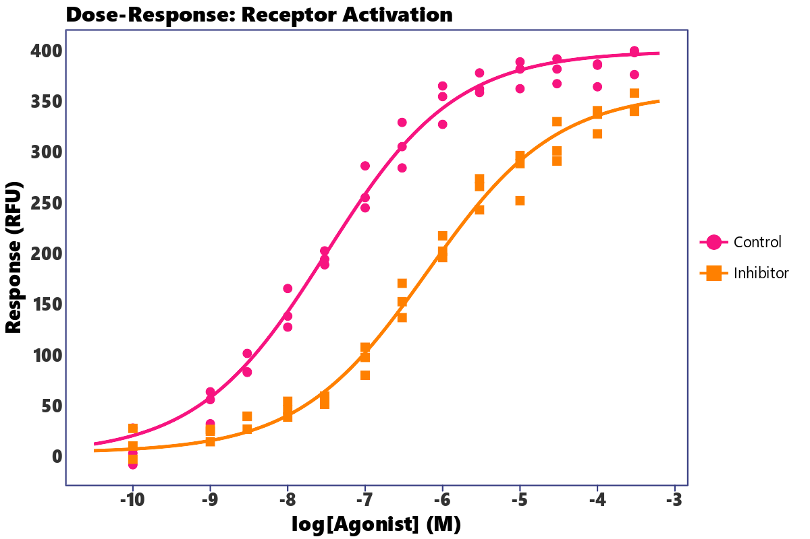
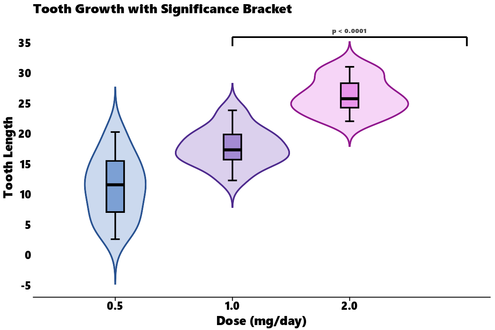
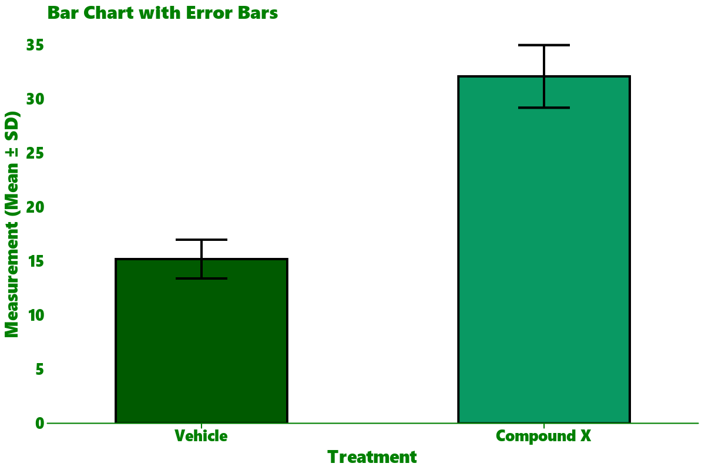

Examples Gallery
This page showcases advanced examples mimicking plots from the R ggprism documentation, demonstrating how to build them in Python using lets-plot and letsplot-ggprism.
1. Dose-Response Curve
Dose-response curves are widely used in pharmacology and biology. Since lets-plot runs in Python, we can pre-calculate a dense sigmoidal curve using numpy and overlay it with our experimental points.
import numpy as np
import pandas as pd
from lets_plot import *
from letsplot_ggprism import theme_prism, scale_color_prism, scale_shape_prism
LetsPlot.setup_html()
# 1. Generate simulated dose-response data
np.random.seed(42)
concentrations = np.array([1e-10, 1e-9, 3e-9, 1e-8, 3e-8, 1e-7, 3e-7, 1e-6, 3e-6, 1e-5, 3e-5, 1e-4, 3e-4])
log_agonist = np.log10(concentrations)
def sigmoid(x, min_val, max_val, ec50, hill):
return min_val + (max_val - min_val) / (1.0 + np.exp(hill * (ec50 - x)))
# Control group replicates
ctr_y = sigmoid(log_agonist, 2, 400, -7.5, 1.2)
ctr_rep1 = ctr_y + np.random.normal(0, 15, len(log_agonist))
ctr_rep2 = ctr_y + np.random.normal(0, 15, len(log_agonist))
ctr_rep3 = ctr_y + np.random.normal(0, 15, len(log_agonist))
# Inhibitor group replicates (shifted EC50 and reduced max response)
trt_y = sigmoid(log_agonist, 4, 360, -6.2, 1.2)
trt_rep1 = trt_y + np.random.normal(0, 15, len(log_agonist))
trt_rep2 = trt_y + np.random.normal(0, 15, len(log_agonist))
trt_rep3 = trt_y + np.random.normal(0, 15, len(log_agonist))
# Store points in a DataFrame
rows = []
for i, log_x in enumerate(log_agonist):
for val in [ctr_rep1[i], ctr_rep2[i], ctr_rep3[i]]:
rows.append({"log_agonist": log_x, "response": val, "group": "Control"})
for val in [trt_rep1[i], trt_rep2[i], trt_rep3[i]]:
rows.append({"log_agonist": log_x, "response": val, "group": "Inhibitor"})
df_points = pd.DataFrame(rows)
# Generate dense smooth curves for geom_line
dense_x = np.linspace(-10.5, -3.2, 100)
line_rows = []
for x in dense_x:
line_rows.append({"log_agonist": x, "response": sigmoid(x, 2, 400, -7.5, 1.2), "group": "Control"})
line_rows.append({"log_agonist": x, "response": sigmoid(x, 4, 360, -6.2, 1.2), "group": "Inhibitor"})
df_lines = pd.DataFrame(line_rows)
# 2. Build plot
plot = (
ggplot()
+ geom_line(aes(x="log_agonist", y="response", color="group"), data=df_lines, size=1)
+ geom_point(aes(x="log_agonist", y="response", color="group", shape="group"), data=df_points, size=3)
+ scale_color_prism("candy_bright")
+ scale_shape_prism()
+ theme_prism(palette="candy_bright", border=True)
+ ggtitle("Dose-Response: Receptor Activation")
+ xlab("log[Agonist] (M)")
+ ylab("Response (RFU)")
)

2. Violin & Boxplot with Significance Bracket
This example mirrors the classic ToothGrowth plot from the R ggprism README. Since there is no direct equivalent of add_pvalue in python's lets-plot, we show how to cleanly add custom significance brackets manually using geom_segment and geom_text.
import numpy as np
import pandas as pd
from lets_plot import *
from letsplot_ggprism import theme_prism, scale_color_prism, scale_fill_prism
LetsPlot.setup_html()
# 1. Generate simulated ToothGrowth-like data
np.random.seed(42)
means = {
("OJ", 0.5): 13.23, ("OJ", 1.0): 22.70, ("OJ", 2.0): 26.06,
("VC", 0.5): 7.98, ("VC", 1.0): 16.77, ("VC", 2.0): 26.14
}
sds = {
("OJ", 0.5): 4.5, ("OJ", 1.0): 3.9, ("OJ", 2.0): 2.7,
("VC", 0.5): 2.7, ("VC", 1.0): 2.5, ("VC", 2.0): 4.8
}
tg_rows = []
for (supp, dose), m in means.items():
sd = sds[(supp, dose)]
for val in np.random.normal(m, sd, 10):
tg_rows.append({"len": val, "supp": supp, "dose": str(dose)})
df_tg = pd.DataFrame(tg_rows)
# 2. Define significance bracket segments
# X-axis categories "0.5", "1.0", "2.0" map to numeric coordinates 1, 2, 3
bracket_df = pd.DataFrame([
{"x": 1.0, "xend": 3.0, "y": 36.0, "yend": 36.0}, # top bar
{"x": 1.0, "xend": 1.0, "y": 36.0, "yend": 34.5}, # left tick
{"x": 3.0, "xend": 3.0, "y": 36.0, "yend": 34.5}, # right tick
])
# 3. Build plot
plot = (
ggplot(df_tg, aes(x="dose", y="len"))
+ geom_violin(aes(color="dose", fill="dose"), trim=False, alpha=0.4)
+ geom_boxplot(aes(fill="dose"), width=0.15, color="black", show_legend=False)
+ geom_segment(aes(x="x", xend="xend", y="y", yend="yend"), data=bracket_df, color="black", size=0.8)
+ geom_text(x=2.0, y=37.0, label="p < 0.0001", size=4, fontface="bold")
+ scale_color_prism("floral")
+ scale_fill_prism("floral")
+ theme_prism(palette="floral", base_size=14)
+ theme(legend_position="none")
+ ggtitle("Tooth Growth with Significance Bracket")
+ xlab("Dose (mg/day)")
+ ylab("Tooth Length")
)

3. Bar Chart with Error Bars
Another signature style of GraphPad Prism is the bar chart with standard deviation error bars.
import pandas as pd
from lets_plot import *
from letsplot_ggprism import theme_prism, scale_fill_prism
LetsPlot.setup_html()
# 1. Create dataset
df = pd.DataFrame([
{"condition": "Vehicle", "mean": 15.2, "sd": 1.8, "ymin": 13.4, "ymax": 17.0},
{"condition": "Compound X", "mean": 32.1, "sd": 2.9, "ymin": 29.2, "ymax": 35.0},
])
# 2. Build plot
plot = (
ggplot(df, aes(x="condition", y="mean", fill="condition"))
+ geom_bar(stat="identity", width=0.5, color="black", show_legend=False)
+ geom_errorbar(aes(ymin="ymin", ymax="ymax"), width=0.15, color="black", size=0.8)
+ scale_fill_prism("evergreen")
+ theme_prism(palette="evergreen")
+ ggtitle("Bar Chart with Error Bars")
+ xlab("Treatment")
+ ylab("Measurement (Mean ± SD)")
)
